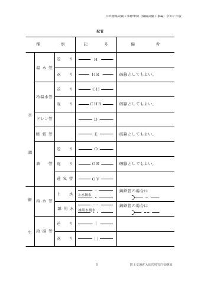
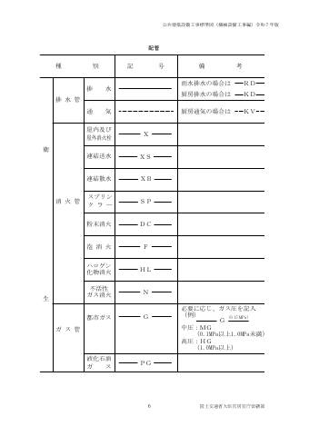
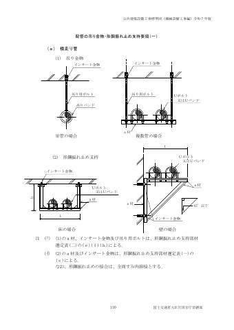
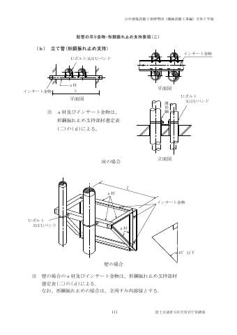
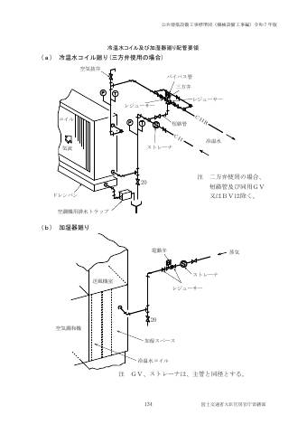
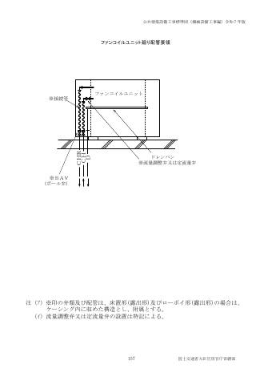
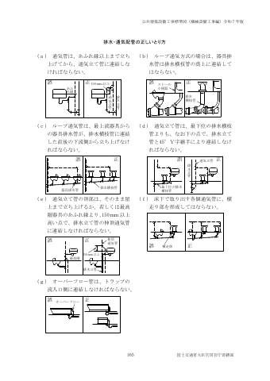

💧 工事別
ドレン配管
空調機・FCU等のドレン管。仕様書上は排水及び通気配管（2.4.8）の扱い。
早見表
主要な数値・ルールの要約です。根拠欄の「2-2.4.6(2)」は「第2編 2.4.6 (2)」を表します。
| 項目 | 規定 | 根拠 |
|---|---|---|
| 扱い | 冷温水配管のドレン管は 2.4.8「排水及び通気配管」による | 2-2.4.2(10) |
| 管材（用途にドレンとある管） | 配管用炭素鋼鋼管 JIS G 3452 白管 ／ リサイクル硬質ポリ塩化ビニル発泡三層管 JIS K 9798 RF-VP ／ 排水・通気用耐火二層管。管材は特記による | 2-2.1.2.6 表2.2.8 |
| RF-VPの使用場所 | 塩ビ管のRF-VPは屋内用（VU・REP-VU・RS-VUは屋外埋設用） | 2-2.1.2.6 表2.2.8 注 |
| 勾配 | 原則 1/100 以上 | 2-2.6.1(4) |
| 空調機用トラップ | ユニット形・コンパクト形・パッケージ形・マルチパッケージ形・GHPのドレン管には、送風機の全静圧以上の落差をとった空調機用トラップを設ける。形式は特記 | 2-2.4.8(6) |
| 間接排水 | 空気調和用機器からの排水は間接排水 | 2-2.4.8(2)(ｳ) |
| 排水口空間 | 水受器のあふれ縁から排水管径の2倍以上（飲料用貯水槽は最小150mm以上） | 2-2.4.8(3) |
| 合流 | 排水横枝管の45°以内合流の規定はドレン管を除く | 2-2.4.8(1) |
| 試験 | ドレン管は通水試験 | 2-2.9.4(1) |
| 保温 | 空調用ドレン管の保温は給排水衛生設備工事の排水管の項（表2.3.5）による | 2-3.1.4.1(2) |
| 保温の厚さ（保温Ⅶ） | ア・イ：呼び径15〜80:20mm ／ 100〜150:25mm ／ 200〜300:40mm、ウ（ポリスチレンフォーム）：15〜80:20mm ／ 100〜300:25mm | 2-3.1.6 表2.3.7 |
| 吊り間隔 | 表2.2.20（塩ビ管：呼び径80以下1.0m以下、100以上2.0m以下 等） | 2-2.6.2.2 表2.2.20 |
標準仕様書 条文
第2編 共通工事
2.1.2.6排水及び通気用第2編


(1) 排水及び通気管の規格は、表 2.2.8 によるものとし、管材は特記による。
表2.2.8 排水及び通気管
規 格
呼 称 用 途
番 号 名 称 備 考
鋼 管 JIS G 3442 水配管用亜鉛めっき鋼管 雑排水、通気
JIS G 3452 配管用炭素鋼鋼管 白管 ドレン
排水用塩ビライニ WSP 042 排水用硬質塩化ビニルライニング鋼管 汚水、雑排水
ング鋼管 雨水、通気
コーティング鋼管 WSP 032 排水用ノンタールエポキシ塗装鋼管 汚水、雑排水
雨水、通気
塩ビ管 JIS K 6741 硬質ポリ塩化ビニル管 VP・VU 汚水、雑排水
AS 58 排水用リサイクル硬質ポリ塩化ビニル管 REP-VU 雨水、通気
JIS K 9798 リサイクル硬質ポリ塩化ビニル発泡三層管 RF-VP ドレン
JIS K 9797 リサイクル硬質ポリ塩化ビニル三層管 RS-VU
耐火二層管 ― 排水・通気用耐火二層管 汚水、雑排水
JIS K 6741「硬質ポリ塩化ビニル管（VP） 雨水、通気
」又はJIS K 9798「リサイクル硬質ポリ塩 ドレン
化ビニル発泡三層管（RF-VP）」規格品に
繊維モルタルで被覆したもので国土交通大
臣認定のもの
コンクリート管 JIS A 5372 プレキャスト鉄筋コンクリート製品 外圧管１
（1類水路用遠心力鉄筋コンクリート管） 種のＢ形
注 塩ビ管のRF-VPは屋内用とし、VU、REP-VU及びRS-VUは、屋外埋設用とする。
(2) 排水及び通気管の継手は、表 2.2.9 による。
表2.2.9 排水及び通気管の継手
呼 称 規 格 備 考
番 号 名 称
鋼管継手 JPF DF 001 排水用ねじ込み式鋳鉄製管継手 亜鉛めっきを施したもの
JPF MDJ 002 排水鋼管用可とう継手 クッションパッキン付を含む。
（MDジョイント） 住宅内転がし配管用は除く。
JPF MDJ 003 圧送排水鋼管用可とう継手
排水用塩ビライ JPF MDJ 002 排水鋼管用可とう継手 クッションパッキン付を含む。
ニング鋼管継手 （MDジョイント） 住宅内転がし配管用は除く。
JPF MDJ 004 ちゅう房排水用可とう継手
コーティング鋼 JPF MDJ 002 排水鋼管用可とう継手 クッションパッキン付を含む。
管継手 （MDジョイント） 住宅内転がし配管用は除く。
JPF MDJ 003 圧送排水鋼管用可とう継手
JPF MDJ 004 ちゅう房排水用可とう継手
塩ビ管継手 JIS K 6739 排水用硬質ポリ塩化ビニル管継
手
AS 38 屋外排水設備用ポリ硬質塩化ビ
ニル管継手（VU継手）
耐火二層管継手 ― 排水・通気用耐火二層管継手
JIS K 6739「排水用硬質ポリ塩
化ビニル管継手」規格品に繊維
モルタルで被覆したもので国土
交通大臣認定のもの
注 1. 規格にない形状、寸法の排水用ねじ込み式鋳鉄製管継手の品質、管の許容差、試験等は、JPF DF 001「排水用ねじ込み式鋳鉄製管継手」に準ずるものとする。
2. 通気管及び呼び径25以下の排水管の継手には、JIS B 2301「ねじ込み式可鍛鋳鉄製管継手」及びJIS
B 2302「ねじ込み式鋼管製管継手」を使用してもよい。
3. 満水試験継手は、JPF MDJ 002「排水鋼管用可とう継手」の満水試験用掃除口付ソケットとする。
なお、継手形状が異なる場合は、上記の規格に準ずるものとする。
※表の罫線はテキスト化で崩れます。数値は必ず原本ページ画像で確認してください。
2.4.2冷温水、ブライン及び冷却水配管第2編

(1) 冷温水、ブライン及び冷却水管の主管の曲部は、原則として、ベンド又はロングエルボを使用する。
(2) 冷凍機の冷温水及びブライン管の入口側には、ストレーナを設ける。また、冷温水、ブライン及び冷却水管の出口側には、瞬間流量計を設け、出入口側には、圧力計、温度計及び防振継手を取付ける。ただし、吸収冷凍機、吸収冷温水機及び吸収冷温水機ユニットにおいては、防振継手を除く。
(3) 冷却塔廻りの配管は、その荷重が直接冷却塔本体にかからないよう十分に支持するものとし、冷却水の出入口側及び補給水管の入口側には、合成ゴム製のフレキシブルジョイントを設け、冷却水の出口側にはストレーナを取付ける。
(4) 冷温水コイルの冷温水出入口側配管（ファンコイルユニット及び天井内設置のコイルを除く。）には、圧力計及び温度計を取付ける。
(5) 冷水、ブライン及び冷温水配管の吊りバンド等の支持部は、合成樹脂製の支持受けを使用する。
(6) ファンコイルユニットと冷温水管の接続部には、ファンコイルユニット用ボール弁を取付ける。
なお、流量調整弁又は定流量弁の適用は特記による。
(7) ファンコイルユニットと冷温水管及びファンコンベクターと温水管との接続には、フレキシブルチューブを使用してもよい。
(8) 熱交換器の冷温水及びブライン出入口側配管には、圧力計及び温度計を取付ける。
(9) 冷温水ヘッダーの往ヘッダー及び各返り配管には、温度計を取付ける。
(10) ドレン管は、2.4.8「排水及び通気配管」による。
(11) 次の機器廻り配管要領は、標準図による。
(ｱ) 空気調和機（冷温水コイル及び加湿器）
(ｲ) 鋳鉄製温水ボイラー
(ｳ) 水冷チリングユニット及び遠心冷凍機
(ｴ) 吸収冷温水機及び吸収冷温水機ユニット
(ｵ) 真空式温水発生機及び無圧式温水発生機
(ｶ) 冷却塔
(ｷ) 空調ポンプ（冷水ポンプ、冷温水ポンプ、温水ポンプ及び冷却水ポンプ）
(ｸ) 多管形熱交換器及びプレート形熱交換器
(ｹ) ファンコイルユニット
(ｺ) 膨張タンク及び密閉形隔膜式膨張タンク
(12) 冷温水主管よりの立上り、立下り分岐配管要領等は、標準図（蒸気及び冷温水管の配管要領）による。
※表の罫線はテキスト化で崩れます。数値は必ず原本ページ画像で確認してください。
2.4.8排水及び通気配管第2編


(1) ドレン管を除き、排水横枝管等が合流する場合は、必ず 45 ﾟ以内の鋭角をもって水平に近く合流させる。
(2) 次のものからの排水は、間接排水とする。
(ｱ) 食品冷蔵容器、厨房用機器、洗濯用機器（業務用）、医療用機器及び水飲器
(ｲ) 冷凍機及び冷却塔並びに冷媒又は熱媒として水を使用する装置
(ｳ) 空気調和用機器
(ｴ) 水用タンク、貯湯タンク、熱交換器その他これに類する機器
(ｵ) 給湯及び水用各種ポンプ装置その他同種機器
(3) 間接排水管は、水受器その他のあふれ縁よりその排水管径の２倍以上の空間（飲料用の貯水槽の場合は最小 150mm 以上）を保持して開口しなければならない。また、水が飛散し支障がある場合は、それに適応した防護方法を講ずる。
(4) 排水立て管の最下部は、必要に応じて、標準図（立て管の床固定要領）により、支持台を設け固定する。
(5) ３階以上にわたる排水立て管には、各階ごとに満水試験継手を取付ける。
(6) ユニット形空気調和機、コンパクト形空気調和機、パッケージ形空気調和機、マルチパッケージ形空気調和機及びガスエンジンヒートポンプ式空気調和機のドレン管には、送風機の全静圧以上の落差をとった空調機用トラップを設けるものとし、空調機用トラップの形式は特記による。
(7) 厨房排水及び厨房排水用通気の継手に排水鋼管用可とう継手を使用する場合は、JPF MDJ004「ちゅう房排水用可とう継手」を使用する。
(8) 水中ポンプの吐出管は、ポンプ本体に荷重がかからないように、かつ、地震動に対しても堅固に支持する。
なお、ポンプを引き上げられるように、吐出管はフランジ接合とし、かつ、逆流を防ぐような立上り部分を設ける。
(9) 通気管は、排水横枝管等より垂直ないし 45 ﾟ以内の角度で取出し、水平に取出してはならない。
(10) 各階の通気管を通気立て管に連結する場合は、その階の器具のあふれ縁より 150mm 以上の所で連結する。
なお、通気立て管を伸頂通気管に連結する場合もこれによる。
(11) 排水及び通気配管要領は、標準図（排水・通気配管の正しいとり方）による。
※表の罫線はテキスト化で崩れます。数値は必ず原本ページ画像で確認してください。
2.5.9塩ビ管第2編

(1) 給水管の接合は、接着接合又はゴム輪接合とし、次による。特記がなければ、接着接合とし、給水装置に該当する場合は、全て水道事業者の定める接合方法による。
(ｱ) 接着接合の場合は、切断後、呼び径 13～30 は１mm、呼び径 40 及び 50 は２mm、呼び径65 以上は２mm 以上の面取りを行い、受口内面及び差口外面の油脂分等を除去した後、差口外面の標準差込み長さの位置に標線を付ける。次に、受口内面及び差口外面に専用の接着剤を薄く均一に塗布し、速やかに差口を受口に挿入し、標線位置まで差込み、そのまま保持する。差込み保持時間は、呼び径 50 以下は 30 秒以上、呼び径 65 以上は 60 秒以上とする。接着後は、はみ出した接着剤をふきとり、換気等により、管内に充満する接着剤の溶媒蒸気を排除する。
(ｲ) ゴム輪接合の場合は、切断後、管の厚さの 1/2、約 15°の面取りを行い、ゴム輪受口内面及び差口外面のゴミ等を除去した後、差口外面の標準差込み長さの位置に標線を付ける。次に、ゴム輪及び差口外面に専用の滑剤を塗布し、管軸を合わせて標線位置まで挿入する。
(2) 排水管の接合は、接着接合又はゴム輪接合とし、次による。
なお、特記がなければ、接着接合とする。
(ｱ) 接着接合及びゴム輪接合共、(1)の(ｱ)及び(ｲ)と同じ接合方法とする。
(ｲ) 管内の流れの障害となる段違いを生じないようにする。
※表の罫線はテキスト化で崩れます。数値は必ず原本ページ画像で確認してください。
2.6.1勾配第2編


(1) 給水管、給湯管、消火管（ガス系消火管を除く。）、冷却水管、冷温水管、ブライン管、高温水管及び油管の場合は、水抜き及び空気抜きが容易に行えるように適切な勾配を確保する。
(2) 屋内横走り排水管の勾配は、原則として、呼び径 65 以下は最小 1/50、呼び径 75、100 は最小 1/100、呼び径 125 は最小 1/150、呼び径 150 以上は最小 1/200 とする。また、通気管は、全ての立て管に向って上り勾配をとり、いずれも逆勾配又は凸凹部のないようにする。
(3) 蒸気給気管は、原則として、先下り配管で、勾配は 1/250 とし、先上がりの場合は 1/80とする。また、蒸気還管は、先下り配管とし、勾配は 1/200 から 1/300 とする。
(4) ドレン管の勾配は、原則として、1/100 以上とする。
※表の罫線はテキスト化で崩れます。数値は必ず原本ページ画像で確認してください。
2.6.2吊り及び支持第2編


2.6.2.1 一般事項
(1) 屋内の配管の吊り、支持等の施工要領は、標準図（配管の吊り金物・形鋼振れ止め支持要領（一）、配管の吊り金物・形鋼振れ止め支持要領（二）、立て管の床固定要領）による。
(2) 屋上の配管の施工要領は、標準図（屋上配管支持施工要領）によるものとし、防水層に支障のないよう施工する。
なお、適用箇所は特記による。
(3) 外壁の配管の施工要領は、特記による。特記がなければ、配管の荷重を支持できる支持金物等を用いる。
(4) 機器廻りの配管は、地震時等に加わる過大な力、機器の振動、管内流体の脈動等による力を抑えるために、次の固定又は支持を行う。
(ｱ) 冷凍機、ポンプ等に接続する呼び径 100 以上の配管は、床より形鋼で固定する。
(ｲ) 呼び径 80 以下の配管、空気調和機及びタンク類に接続する配管は、形鋼振れ止め支持とする。
なお、施工要領は、標準図（機器廻り配管吊り及び支持要領（一）、機器廻り配管吊り及び支持要領（二））による。
(5) ステンレス鋼管及び銅管の支持及び固定に鋼製又は鋳鉄製の金物を使用する場合は、合成樹脂を被覆した支持及び固定金具を用いるか、ゴムシート又は合成樹脂の絶縁テープ等を介して取付ける。
なお、合成樹脂が破損しないように、締付ける。
(6) インサート金物は、吊り用ボルトに対し、適正なサイズのものを選定する。
(7) 壁貫通等で、形鋼による振れ止めと同等に振れを防止できる場合は、貫通部及び吊りをもって振れ止め支持とみなしてもよい。
2.6.2.2 横走り管の吊り及び支持
(1) 横走り管は、吊り金物による吊り及び形鋼振れ止め支持を表 2.2.20 により行う。また、形鋼振れ止め支持を行う横走り主管の末端部には、形鋼振れ止め支持を行う。
表2.2.20 横走り管の吊り及び振れ止め支持間隔
呼び径
分 類 15 20 25 32 40 50 65 80 100 125 150 200 250 300
吊り金物 鋼管及び 2.0ｍ以下 3.0ｍ以下
による吊 ステンレス鋼管
り 塩ビ管、 1.0ｍ以下 2.0ｍ以下
耐火二層管及び
ポリエチレン管
銅 管 1.0ｍ以下 2.0ｍ以下
0.6ｍ 1.0ｍ以 1.6m
ポリブテン管 0.7ｍ以下 1.3ｍ以下 ―
以下 下 以下
形鋼振れ 鋼管及び ― 8.0ｍ以下 12ｍ以下
止め支持 ステンレス鋼管
塩ビ管、 ―― 6.0ｍ以下 8.0ｍ以下 12ｍ以下
耐火二層管、
ポリエチレン管
及びポリブテン管
銅 管 ―― 6.0ｍ以下 8.0ｍ以下 12ｍ以下
(2) 次の配管の形鋼振れ止め支持は不要とし、必要な場合の支持間隔は特記による。
(ｱ) 鋼管及びステンレス鋼管の呼び径 40 以下
(ｲ) 塩ビ管、耐火二層管、ポリエチレン管、ポリブテン管及び銅管の呼び径 20 以下
(ｳ) 配管の吊り用ボルトの長さが均一で、200mm 以下の場合
(3) 直管部の長さが 25m を超える場合は、25m 以内ごとに、直管方向の形鋼振れ止め支持を行う。ただし、表 2.2.20 で形鋼振れ止め支持を規定していない呼び径の配管は不要とする。
(4) 吊り用ボルトは、吊り荷重により適正なボルト径のものを選定する。ただし、鋼管及びステンレス鋼管の横走り管の吊り用ボルトの径は、配管呼び径 100 以下は呼称 M10 又は呼び径 9、呼び径 125 以上 200 以下は呼称 M12 又は呼び径 12、呼び径 250 以上は呼称 M16 又は呼び径 16 としてもよい。
(5) ハウジング形管継手で接合されている呼び径 100 以上の配管は、吊り材長さが 400mm 以下の場合、吊り材に曲げ応力が生じないように、吊り用ボルトに替えてアイボルト、鎖等を使用して吊る（可動式のみ、固定式は除く。）。
(6) 電動弁等の重量物及び可とう性を有する継手（排水鋼管用可とう継手、ハウジング形管継手(可動式)等）を使用する場合は、表 2.2.20 のほか、その直近で吊る。曲部及び分岐箇所は、必要に応じて支持する。
(7) 蒸気管の横走り管を、形鋼振れ止め支持により下方より支持する場合には、ローラ金物等を使用する。
(8) 蒸気管の横走り管は、伸縮管継手と固定点との中間に標準図（伸縮管継手の固定及びガイド・座屈防止用形鋼振れ止め支持施工要領）による座屈防止用形鋼振れ止め支持を設ける。
(9) 冷媒用銅管の吊り、支持等は次による。
(ｱ) 吊り金物の間隔は、銅管の基準外径が 9.52mm 以下の場合は 1.5ｍ以下、12.70mm 以上の場合は 2.0ｍ以下とする。
(ｲ) 形鋼振れ止め支持間隔は銅管による。ただし、液管・ガス管共吊りの場合は、液管の外径とするが、液管 25mm 未満の形鋼振れ止めの支持間隔は、ガス管の外径による。
(ｳ) 冷媒管と制御線を共吊りする場合は、支持部で制御線に損傷を与えないようにする。
2.6.2.3 立て管の支持
(1) 複数階にわたって設置する立て管は、表 2.2.21 により固定(床)及び形鋼振れ止め支持を行う。
表 2.2.21 立て管の固定(床)及び振れ止め箇所
施工の種別 管種 施工場所
鋼管及びステンレス鋼管 最下階の床又は最上階の床
固定(床)
(呼び径80以下は不要としてもよい。)
形鋼振れ 鋼管及びステンレス鋼管 各階１箇所
止め支持 塩ビ管、耐火二層管及び 各階１箇所
ポリエチレン管
銅管 各階１箇所
(2) 呼び径80以下の配管の固定(床)は、不要としてもよい。
(3) 鋼管及びステンレス鋼管で、床貫通等により振れが防止されている場合は、形鋼振れ止め支持を3階ごとに1箇所としてもよい｡
なお、排水用可とう継手を使用する場合は、最下階の床に１箇所設ける。
(4) 耐火二層管の立て管に伸縮継手を取付ける場合で伸縮継手直下に床貫通の振れ止め支持がされている場合は、伸縮継手の形鋼振れ止め支持の固定と共用してもよい。
(5) 冷媒用銅管の立て管の振れ止めは、形鋼による支持に代えて、冷媒用銅管用の支持材を用いても良い。
(6) 冷媒用銅管の立て管は、立て管長の中間部で１箇所固定し、他は配管の温度変化による伸縮を妨げない支持とする。
※表の罫線はテキスト化で崩れます。数値は必ず原本ページ画像で確認してください。
2.9.1一般事項第2編

2.9.4排水及び通気配管第2編

3.1.4.1一般事項第2編


(1) 空気調和設備工事の保温の種別及び厚さは、(2)及び(3)によるほか、表 2.3.2 による。
(2) 空調用のドレン管の保温は、3.1.5「給排水衛生設備工事」排水管の項による。
(3) 以下のダクト、機器、管、弁、フランジ等の保温を行う場合は、保温の適用、種別及び厚さを特記する。
(ｱ) 換気用ダクト
(ｲ) 外気取入れ用ダクト
(ｳ) 排気用ダクト
(ｴ) 厨房排気用ダクト
(ｵ) 空調している建物内の還りダクト
(ｶ) 屋内外露出排煙ダクト
(ｷ) 暗渠内（ピット内を含む。）のダクト
(ｸ) 内貼りしたダクト及び内貼りしたチャンバー
(ｹ) 断熱材付きフレキシブルダクト及びたわみ継手
(ｺ) 屋外露出の煙道及び煙突
(ｻ) ユニット形空気調和機及びコンパクト形空気調和機
(ｼ) 送風機
(ｽ) ポンプ
(ｾ) オイルサービスタンク及びオイルタンク
(ｿ) 空調用密閉形隔膜式膨張タンク
(ﾀ) プレート形熱交換器
(ﾁ) 共同溝に設置する配管
(ﾂ) 放熱器廻り蒸気管及び温水管
(ﾃ) 蒸気還管
(ﾄ) 蒸気管及び温水管で、屋内及び暗渠内の弁、フランジ、伸縮管継手、防振継手、フレキシブルジョイント、各種装置廻りの配管等
(ﾅ) 冷凍機の冷却水管
(ﾆ) ポンプ廻りの防振継手、フレキシブルジョイント
(ﾇ) 各種タンク類のオーバーフロー管及びドレン管（冷水及び冷温水タンクの第一バルブまでを除く。）
(ﾈ) エア抜弁以降の配管及び排泥弁以降の配管
(ﾉ) 油管
(ﾊ) 断熱材被覆銅管
表 2.3.2 空気調和設備工事の保温の種別及び厚さ
保温の種別
施工箇所
天井内、 暗渠内 厚
区 分 屋内露出 機械室、 多湿箇
パイプ及びダク (ピット 保温材料 さ
(一般居 書庫、 所、屋
トシャフト内、 内を含
室、廊下) 倉庫 外露出
空隙壁中 む。)
温 水 管
A1、A 3 Ｂ C2 Ｄ E２ ア・イ Ⅰ
(膨張管を含む。)
蒸 気 管
管
□ (低圧(0.1MPa 未満)の A1、A 3 Ｂ C2 Ｄ E２ ア・イ Ⅱ
継
手 蒸気)
及 冷水・冷温水管
び A1、A 3 Ｂ C1 Ｄ E２ ア・イ・ウ Ⅲ
弁 (膨張管を含む。)
類
を 冷水管
含 Ｂ C1 ウ Ⅳ
(冷水温度 2～4℃)
む
□ ブライン管
□ A1、A 3 Ｂ C1 Ｄ E２ ウ Ⅴ
(ブライン温度-10℃)
冷媒管
A1、A 3 Ｂ C1 Ｄ E２ ア・イ Ⅵ
(断熱材被覆銅管を除く。)
冷水タンク、
冷温水タンク、
F１ F2、F 3 ア・イ・ウ Ⅸ
タ 冷水ヘッダー、
ン 冷温水ヘッダー
ク
及 温水タンク、
び
ヘ 還水タンク、
□
ダ 温水ヘッダー、 G１ G2、G 3 ア・イ Ⅸ
□ 蒸気ヘッダー、
熱交換器
開放形膨張タンク G１ G2、G 3 ア・イ Ⅷ
一
般 長方形ダクト J１ Ｉ Ｉ K２ ア・イ Ⅺ
ダ
ク
スパイラルダクト O１ Ｎ Ｎ P２ ア・イ Ⅺ
ト
消 サプライチャンバー Ｍ Ｍ ア・イ Ⅸ
音
内 消音チャンバー、
Ｌ Ｌ ア・イ Ⅷ
貼 消音エルボ
排
煙
長 方 形 Ｉ ア Ⅺ
ダ
ク 円 形 Ｎ ア Ⅺ
ト
煙 長 方 形 H１ ア Ⅹ
道 円 形 H１ ア Ⅹ
注 1. 建築基準法施行令第112条第20項に規定する準耐火構造の防火区画等を貫通する冷水管及び冷温水管の保温は、その貫通する部分をロックウール保温材で行う。
2. ダクトのフランジ部（補強を含む。）は、厚さ25mmの保温材の重ね巻きを行うか、ダクトの保温厚さを
フランジ高さ+10mm以上とする。（送風温度が14℃以上の場合）
3. 保温の種別の記号は、3.1.4.2「管、タンク及びヘッダーの保温の種別」及び3.1.4.3「ダクトの保温の
種別」による。
4. 保温の厚さの記号は、3.1.6「保温材の厚さ」による。
5. 保温の施工箇所の多湿箇所は、浴室、厨房等を含む。
なお、厨房の天井内は含まない。
6. 保温の施工箇所の屋外露出は、バルコニー及び開放廊下を含む。 7. 保温の施工箇所の空欄部分で保温を行う場合は、保温の適用、種別及び厚さを特記する。
※表の罫線はテキスト化で崩れます。数値は必ず原本ページ画像で確認してください。
3.1.5.1一般事項第2編


(1) 給排水衛生設備工事の保温の種別及び厚さは、(2)によるほか、表 2.3.5 による。
(2) 以下の機器、管、弁、フランジ等の保温を行う場合は、保温の適用、保温の種別及び厚さを特記する。
(ｱ) 衛生器具の附属品と見なされる器具及び配管（流し下部の床上排水管を含む。）
(ｲ) 共同溝に設置する配管
(ｳ) 鋼板製のタンク（ふたの部分は保温を行わない。）
(ｴ) 給水管で、ポンプ廻りの防振継手、フレキシブルジョイント
(ｵ) 給水及び排水の地中又はコンクリート埋設配管
(ｶ) 給湯管で、屋内及び暗渠内配管の弁、フランジ、伸縮管継手、防振継手、フレキシブルジョイント等
(ｷ) 保温付被覆銅管
(ｸ) 排水管で、暗渠内配管（ピット内を含む。）、屋外露出配管及び耐火二層管
(ｹ) 通気管（保温された排水管の分枝点より100mm以下の部分を除く。）
(ｺ) 消火管
(ｻ) 厨房機器及びガス湯沸器廻りの給水、排水及び給湯管
(ｼ) 各種タンク類のオーバーフロー管及びドレン管
(ｽ) エア抜弁以降の配管及び排泥弁以降の配管等
(ｾ) ポンプ
(ｿ) 消火用呼水タンク
(ﾀ) 給湯用密閉形隔膜式膨張タンク
(ﾁ) 屋内外露出の排気筒
表 2.3.5 給排水衛生設備工事の保温の種別及び厚さ
保温の種別
施工箇所
機械 天井内、 厚
区 分 屋内露出 暗渠内（ピッ
室、書 パイプシャ 多湿 屋外 保温材料 さ
（一般居 ト内を含
庫、 フト内、 箇所 露出
室、廊下） む。）
倉庫 空隙壁中
管 ａ 1、ａ 3 ｂ ｃ ア・イ・ウ
□ 給水管 Ⅶ
継
手 ｄ ｅ２ ウ
及
び
弁 ａ 1、ａ 3 ｂ ｃ ア・イ・ウ
類
を 排水管 Ⅶ
含 ｅ２ ウ
]
む
□ 給湯管
□ ａ 1、ａ 3 ｂ ｃ ｄ ｅ２ ア・イ Ⅰ
(膨張管を含む。)
鋼板製のタンク f１ f ２ 、f ３ ア・イ・ウ Ⅷ
タ 貯湯タンク g１ g ２ 、g ３ ア・イ Ⅸ
ン
ク
等 排気筒
ｈ ア Ⅸ
(隠ぺい箇所)
注 1. 建築基準法施行令第112条第20項に規定する準耐火構造の防火区画等を貫通する給水管、排水管及び給湯管の保温は、その貫通する部分をロックウール保温材で行う。
2. 保温の種別の記号は、3.1.5.2「管、タンク及び排気筒の保温の種別」による。 3. 保温の厚さの記号は、3.1.6「保温材の厚さ」による。 4. 通気管のうち、保温された排水管の分岐より100mm以下の部分は、排水管の保温による。 5. 保温の施工箇所の多湿箇所は、浴室、厨房等を含む。
なお、厨房の天井内は含まない。
6. 保温の施工箇所の屋外露出は、バルコニー及び開放廊下を含む。 7. 保温の施工箇所の空欄部分で保温を行う場合は、保温の適用、種別及び厚さを特記する。
※表の罫線はテキスト化で崩れます。数値は必ず原本ページ画像で確認してください。
3.1.6保温材の厚さ第2編

(1) 空気調和設備工事及び給排水衛生設備工事の保温材の厚さは、表 2.3.7 による。
なお、寒冷地等で、これによることができない場合は、特記による。
表2.3.7 保温材の厚さ （単位 mm）
呼び径
15 20 25 32 40 50 65 80 100 125 150 200 250 300 参考使用区分
保温
の種別
Ⅰ ア 20 25 40 ロックウール 温水管
給湯管
イ 20 25 40 グラスウール
Ⅱ ア 20 30 40 ロックウール 蒸気管
(低圧(0.1MPa未満))
イ 20 30 40 グラスウール
Ⅲ ア 30 40 50 ロックウール 冷水管
冷温水管
イ 30 40 50 グラスウール
ウ 30 40 50 ﾎﾟﾘｽﾁﾚﾝﾌｫｰﾑ
Ⅳ ウ 30 40 50 ﾎﾟﾘｽﾁﾚﾝﾌｫｰﾑ 冷水管
(冷水温度2～4℃)
Ⅴ ウ 40 50 65 ﾎﾟﾘｽﾁﾚﾝﾌｫｰﾑ ブライン管
(ﾌﾞﾗｲﾝ温度－10℃)
Ⅵ ア 30 40 50 ロックウール 冷媒管
イ 30 40 50 グラスウール
Ⅶ ア 20 25 40 ロックウール 給水管
排水管
イ 20 25 40 グラスウール
ウ 20 25 ﾎﾟﾘｽﾁﾚﾝﾌｫｰﾑ
Ⅷ 25 タンク及びヘッダー、排気筒、煙
Ⅸ 50 道、消音内貼
Ⅹ 75
XI 屋内露出（機械室、書庫、倉庫）及び隠ぺい部は25 一般ダクト、排煙ダクト
屋内露出（一般居室、廊下）、多湿箇所及び屋外露出は50※表の罫線はテキスト化で崩れます。数値は必ず原本ページ画像で確認してください。
標準図
ドレンが図示されている「冷温水コイル及び加湿器廻り配管要領」「ファンコイルユニット廻り配管要領」と排水・吊りの共通図です。













